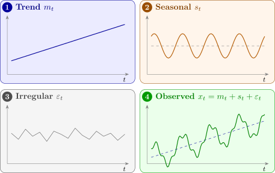

2.1 Components of a time series
Traditionally a series is analysed by decomposing it into components, each a source of variation:
- 1.
- Trend: a long-term change in the mean level.
- 2.
- Seasonal effects: variation that repeats with a fixed period, usually annual, such as sales that rise every December.
- 3.
- Cyclic effects: variation with a longer, less regular period, from some other physical or economic cause; business cycles, for example, often have a period of five to seven years.
- 4.
- Irregular fluctuations: what is left when the trend, seasonal and cyclic variation have been removed. These residuals may or may not be random.
The components are usually combined in one of two ways. With trend \(m_t\), seasonal effect \(s_t\) and irregular term \(\varepsilon _t\): \[ \text {additive:}\quad x_t = m_t + s_t + \varepsilon _t , \qquad \qquad \text {multiplicative:}\quad x_t = m_t\,s_t\,\varepsilon _t . \] In the additive model the seasonal swings have the same size whatever the level of the series; in the multiplicative model they grow in proportion to the level. Figure 1 shows how the components add up to a series.

Questions on this section
Stuck on something here? Ask below and it stays attached to this topic.